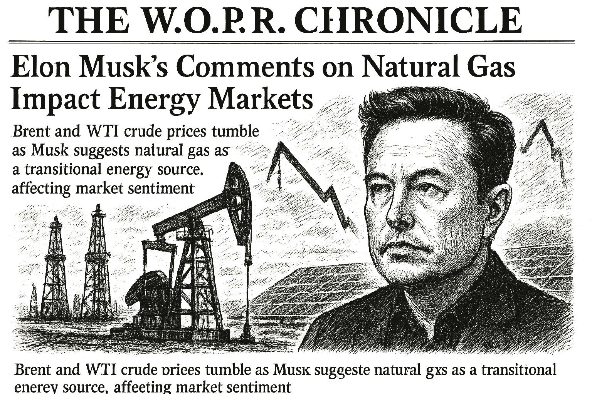

SPY
Current: $776.08Change: +46.62 (+6.39%)
Updated:
Source: yahoo_chartFreshness: fresh


Brent and WTI crude prices tumble as Musk suggests natural gas as a transitional energy source, affecting market sentiment.

Today's Headline: Elon Musk's Comments on Natural Gas Impact Energy Markets
Setup: Brent and WTI crude prices tumble as Musk suggests natural gas as a transitional energy source, affecting market sentiment.
Primary Topic: Energy Markets
Specific Development: Elon Musk stated he is 'not against' using natural gas as a bridge to solar energy, causing significant price drops in Brent and WTI crude.
Why Today Is Different: This statement has led to a notable decline in oil prices, reflecting a shift in market sentiment towards energy sources amid ongoing geopolitical tensions.
Secondary Topics: Geopolitical Tensions; Market Volatility
Tone: cautious
Sectors: Energy; Utilities
Companies: SPCX; RCL
Commodities: Brent; WTI
Countries Or Regions: United States; Iran
Macro Themes: Energy Transition; Geopolitical Risks
Why This Story: Musk's comments could reshape energy investment strategies and influence market dynamics, particularly in the oil sector.
Why This Matters: Musk's remarks could significantly influence energy market dynamics and investment strategies.

- What happened overnight: Major energy commodities fell sharply as Musk's comments on natural gas shifted market sentiment.
- What changed materially: Brent and WTI crude prices dropped significantly, indicating a potential shift in energy investment strategies.
- Market risk: calm (36).
- Macro regime: narrow_mega_cap_risk_on with confidence 0.65.
- Important canonical events: 25 deduplicated event(s) passed materiality and freshness checks.
- Why markets moved: VIX moved -22.51%; no single verified catalyst dominated.
Why This Matters: Understanding the implications of Musk's comments on energy prices is crucial for navigating current market dynamics.


- WOPR learning pipeline: Collecting samples
- Candidates evaluated 24h: 0
- Current gate: Evidence
- Notification ledger events in 24h: 4
- Pending orders created/canceled/filled/expired: 1/1/0/0
- Pending lifecycle interpretation: Pending-order cancellations have trackable reasons and no obvious rapid churn pattern.
- Portfolio risk: Label: Low / Score: 24.0
- Latest intelligence gap report: intelligence_gap_report_2026-08-02.pdf
Why This Matters: The active gate is Evidence, so the key question is why candidates are stopping before approval, not how to force trades.

- Sentinel role: infrastructure and operational status only.
- State: ONLINE
- Last successful validation: 2026-08-05T14:13:41.111857+00:00
- Payloads accepted/rejected: 9075/0
- Node health score: 100
Why This Matters: Sentinel is ONLINE, so Joshua should use its context only to the extent the latest accepted pulse is fresh and authenticated.

Joshua currently favors DELL because it is the highest-ranked available internal opportunity from Portfolio Intelligence.
Candidate confidence: 79.5
Portfolio risk: Label: Low / Score: 24.0
Supporting evidence: Prediction evidence: FLAT 0.5% at 65 confidence. / WOPR history (mixed historical/simulation cohort; production eligibility not established): 21847 scored sample(s), 81.8% win rate. / DELL improves diversification while preserving portfolio fit. / Breadth support: broad_strength (84.3/100). / Canonical event: Analyst Makes Bold Dell Call Ahead of Earnings [event-0e6264896fa76018e0dced99] / Next high-impact macro event: Advance Monthly Sales for Retail and Food Services at 2026-08-14T12:30:00+00:00.
Contradicting evidence: none captured
Missing evidence: none captured
Invalidation conditions: Candidate confidence or portfolio-fit evidence deteriorates materially.
Why it matters: DELL is an observation-only review target, not an instruction; Joshua should compare its evidence stack against market context and recent gate failures.
Why This Matters: A top setup earns attention, not automatic allocation; the brief should help Joshua decide what evidence is missing.

- How might Musk's comments influence long-term energy investment strategies?
- What are the potential implications for oil demand if natural gas is increasingly viewed as a transition fuel?
- How should Joshua adjust its energy sector outlook in light of these developments?
- What are the key indicators to monitor for further shifts in energy market sentiment?
- How do geopolitical tensions interplay with Musk's statements on energy?

Musk's comments on natural gas as a transitional energy source have led to significant declines in Brent and WTI prices, reflecting a shift in market sentiment. This development highlights the interconnectedness of energy markets and geopolitical factors, necessitating careful monitoring of market reactions and potential investment strategies.

Brent and WTI crude prices have dropped sharply following Musk's comments, contrasting with previous stability.

The unexpected impact of Musk's statements on oil prices necessitated a reevaluation of energy market narratives.
No new warnings; however, the volatility in energy prices warrants close monitoring.
Portfolio Construction Review
Current allocation: 0 allocated.
Largest sector: None at 0.0%.
Largest theme: None at 0.0%.
Diversification: Broad (100.0).
Cash allocation: 100.0% unallocated.
Recommended exposure: DELL at portfolio-fit score 92.0.
Portfolio fit: DELL improves diversification while preserving portfolio fit.
Why This Matters: Portfolio Manager evaluates whether an opportunity improves this portfolio; it does not select the investment, vote, or authorize execution.

Today, the evidence gate matters more than the ticker list; Evidence is where Joshua's attention belongs.

| Can trigger trade | no |
| Can modify trade rules | no |
| Can add watch items | yes |
| Can add review questions | yes |
| Can adjust confidence notes | yes |
| Input policy | external_intelligence_plus_sanitized_internal_observations |
| External policy | The Editor-in-Chief synthesizes current world/market context where available and labels unknowns; provider/model provenance remains separate. |
| Internal policy | Joshua/WOPR/Sentinel facts are supplied as sanitized observation-only summaries. |
| Editorial model | gpt-4o-mini |
- Selected by a deterministic daily rotation through symbols already present in the persisted Chronicle snapshot.
- Committee status: watch; confidence: 79.5.
- Next recorded catalyst: Analyst Makes Bold Dell Call Ahead of Earnings.
- Related event on the canonical wire: Analyst Makes Bold Dell Call Ahead of Earnings
- Elon Musk Says He's 'Not Against' Using Natural Gas as a Bridge to Solar, Backs Long-Term Role
- Desk: commodity; source: Yahoo; linked symbols: TSLA.
- Published: 8/4/26 20:31 MST.
- High-impact watch: Advance Monthly Sales for Retail and Food Services - 8/14/26 05:30 MST.
- Affected assets: US equities, Treasuries, USD; source: census_release_schedule.
- AIRO earnings: August 13, 2026, time unknown.
- ZIM earnings: August 19, 2026, before open.
- Technology: 12.67% session performance; source: persisted sector ledger.
- Consumer Discretionary: 6.88% session performance; source: persisted sector ledger.
- Industrials: 6.28% session performance; source: persisted sector ledger.
- WTI: -10.98% recorded move; price: 75.37.
- Session: open; catalyst status: possible; source: yahoo_chart.
- Pending order lifecycle; why it matters: Pending-order cancellations have trackable reasons and no obvious rapid churn pattern.
- State: broad_strength; score: 84.30/100; advance/decline ratio: 1.98.
- Above 50-day average: 68.10%; sample: 119; provider: sentinel_sampled_breadth.
- Decision outcomes evaluated: 16; currently untestable: 0.
- Warning review: still watching 3; confidence calibration: insufficient_sample.
- Current macro regime: narrow_mega_cap_risk_on; change probability: unavailable.
- Risk dashboard: calm (36/100); breadth: broad_strength; sentiment: neutral.
- Scenario board only - a current-state observation, not a forecast or execution instruction.

- Produced a celebrated record managing Fidelity Magellan and taught generations of individuals how to research understandable growth companies.
- Published quotation: "The person that turns over the most rocks wins the game."
- Published framework: Start with companies you can understand, then verify the story through earnings, balance-sheet strength, valuation, competitive position, and a clearly stated reason the opportunity may be mispriced.
- Committee lens: Lynch asks Joshua for a plain-language company story and the fundamental evidence behind it, connecting real-world observation to valuation rather than to hype.
- Public philosophy profile only; no participation, endorsement, or current recommendation is implied.
- What are the key indicators to monitor for further shifts in energy market sentiment?
- How might Musk's comments influence long-term energy investment strategies?
- What are the potential implications for oil demand if natural gas is increasingly viewed as a transition fuel?
- How should Joshua adjust its energy sector outlook in light of these developments?
- What are the key indicators to monitor for further shifts in energy market sentiment?
- Proposed review: Sentinel infrastructure state ONLINE; why it matters: Operational freshness affects how much Joshua can trust external/context observations.
- Proposed review: WOPR pipeline Collecting samples; why it matters: The active gate shows whether today's constraint is opportunity count, evidence quality, or calibration.
- Canonical instruments reviewed: 24; delayed 6, fresh 18.
- Leading sources: yahoo_chart (21), treasury_official_yield_curve (3).
- Snapshot recorded: 8/5/26 07:05 MST.
Elon Musk's Comments on Natural Gas Impact Energy Markets
Storm meter: Cautious
Joshua currently favors DELL because it is the highest-ranked available internal opportunity from Portfolio Intelligence.
Candidate confidence: 79.5
Portfolio risk: Label: Low / Score: 24.0
Supporting evidence: Prediction evidence: FLAT 0.5% at 65 confidence
Observation mode: observation_only
Watch: Pending order lifecycle; why it matters: Pending-order cancellations have trackable reasons and no obvious rapid churn pattern.
Question: How might Musk's comments influence long-term energy investment strategies?